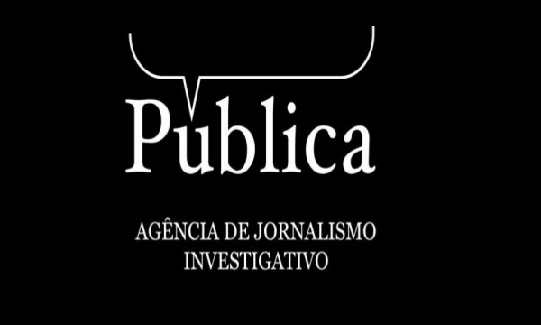

Fundada em 2011 por mulheres jornalistas, a Agência Pública é uma instituição sem fins lucrativos que avalia notícias com temas que envolvem administração pública e defesa dos direitos humanos. Ela é responsável por avaliar diversas falas de políticos, classificando-as em diversas categorias como verdadeiro, sem contexto, discutível, exagerado, subestimado, impossível provar ou falso.
